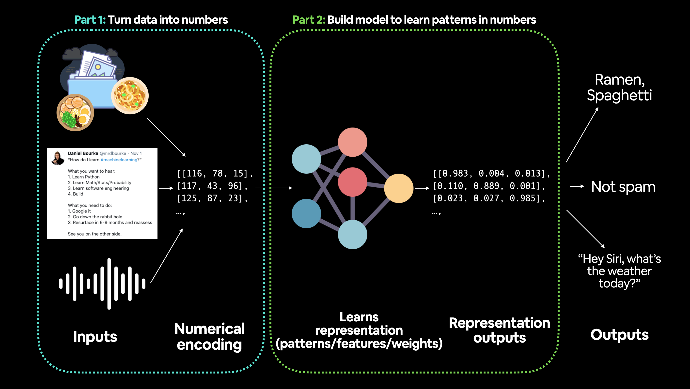
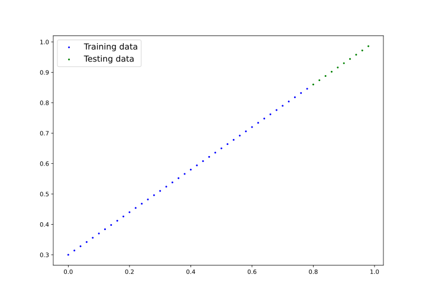

1. Intro
-
Data Preparing and Loading
-
ML中的数据可以是任何能想到的事物，如excel spreadsheet，
任何类型图像，(youtube)视频，音频，蛋白质(protein)结构，文本等；

-
ML由两部分组成：A：数据；B：选择或构建的模型；
-
使用线性回归linear regression创建具有已知参数parameter(模型可学习的事物)
的数据，看是否可使用梯度下降gradient descent来建立模型来评估这些参数； -
对相关术语，无需特别关心，因没太大意义，会看到实际应用；
# create *known* parameter
bias = 0.3
weight = 0.7
# create data
start = 0
end = 1
step = 0.02
X = torch.arange(start,end,step).unsqueeze(dim=1)
y = weight * X + bias
X[:10],y[:10]-
X：horizontal_feature，y：vertical_label；
(tensor([[0.0000],
[0.0200],
[0.0400],
[0.0600],
[0.0800],
[0.1000],
[0.1200],
[0.1400],
[0.1600],
[0.1800]]),
tensor([[0.3000],
[0.3140],
[0.3280],
[0.3420],
[0.3560],
[0.3700],
[0.3840],
[0.3980],
[0.4120],
[0.4260]]))2. Split Data
-
split data into training and test set
-
注：处理真实数据时，此步骤通常在项目开始时完成，测试集应始终与所有其它数据分开；
希望模型能学习训练数据，然后在测试数据上对其评估，
以了解它对未见过示例example的泛化generalize程度
| Type | Percentage | Purpose |
|---|---|---|
TrainingSet |
60% ~ 80% |
模型从数据中学习，如在学期semester中学习的课程资料 |
ValidationSet |
10% ~ 20% |
模型根据数据进行调整，如模拟考试 |
TestingSet |
10% ~ 20% |
模型根据数据进行评估，以测试学到的知识，如期末考试 |
import torch
# nn contain all pytorch building block for neural network
from torch import nn
import matplotlib.pyplot as plt
# check PyTorch version
torchVersion = torch.__version__
# create *known* parameter
bias = 0.3
weight = 0.7
# create data
start = 0
end = 1
step = 0.02
X = torch.arange(start,end,step).unsqueeze(dim=1)
y = weight * X + bias
X[:10],y[:10]
# create training(80%)/testing(20%) split
train_split = int(0.8 * len(X))
X_train,y_train = X[:train_split],y[:train_split]
X_test,y_test = X[train_split:],y[train_split:]
print("X：horizontal_feature，y：vertical_label")
print("training:(X_train:{}, y_train:{})\ntesting:(X_test:{},y_test:{})"
.format(len(X_train),len(y_train),len(X_test),len(y_test)))print("X：horizontal_feature，y：vertical_label")
training:(X_train:40, y_train:40)
testing:(X_test:10,y_test:10)3. Visualization
import torch
from torch import nn
import matplotlib.pyplot as plt
def plot_prediction(train_data=X_train,
train_label=y_train,
test_data=X_test,
test_label=y_test,
prediction=None):
"""
plot training data,test data and compare prediction
"""
plt.figure(figsize=(10, 7))
# plot training data in blue
plt.scatter(train_data,train_label,c="b",s=4,label="Training data")
# plot test data in green
plt.scatter(test_data,test_label,c="g",s=4,label="Testing data")
if prediction is not None:
# plot prediction in red (prediction were made on test data)
plt.scatter(test_data,prediction,c="r",s=4,label="Prediction")
# show legend
plt.legend(prop={"size": 14});
plot_prediction();
plt.savefig("VisualizeDataSplitting.svg")
